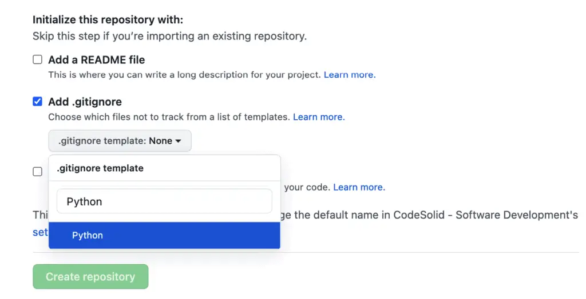

One of those questions that every Python developer wonders about at some point are those weird extra directories and files they’ll see crop up from time to time. Setting aside __init__.py for a moment, sometimes you’ll see directories you didn’t create: __pycache__, filled with files with a .pyc extension that have the same root filename as your source code. What are these pycache files, and what do you do about them? Or sometimes you’ll see those .pyc files outside of a __pycache__ directory as well.
Files with the “pyc” extension are the cached, compiled bytecode that Python creates the first time you run your program, or whenever the source file has changed. You should generally ignore these files, but they should not be checked into version control systems like git.
In this article, we discuss some questions that arise about why these files are there. We also go over some simple techniques for ensuring these files are not checked in and for deleting them recursively should you wish to do so. We’ll cover both problems you can have locally and problems that may come up when dealing with version-controlled files.
Why does Python Compile Files? Isn’t It Interpreted?
A common misunderstanding about Python cache files is why they’re even there, given that Python is supposed to be an “interpreted” language. However, if we take the time to more clearly understand what’s meant when we talk about compilation and interpretation, this confusion largely disappears.
A good example of a compiled language is the C language. The most common way that C programs are run is that they are compiled from C directly into machine code, then linked with other C files and startup code to create standalone executables. Once the executable is produced, it runs on the machine directly – you don’t need to ship the C compiler you used to produce the program to your users.
An interpreted language like Python, in contrast, requires you to have the interpreter present to run the program, because it’s not run by the machine directly. Instead, it’s run by the interpreter, which typically translates the program into an intermediate thing, called bytecode. Where things get confusing is that interpreted languages also call the built-in or standalone tool that translates source files into bytecode a “compiler”. In standard Python (CPython), a single executable serves as both the source-code “compiler” and as the interpreter of the compiled bytecode (which can sometimes be cached to disk in the form of “pyc” files).
In other languages, such as Java, the compiler and interpreter are separate programs. Java programs are first compiled to Java Virtual Machine bytecode using the “javac” executable, then the compiled java bytecode is run using the “java” executable.
So even though Python is compiled to bytecode in certain cases (e.g., imported packages), the compiled bytecode still can’t be run directly by the machine – it needs an interpreter.
Ignoring Python Cache Files in Version Control
Python cache files – like most binary files that depend on other source files – should not usually be checked in to version control. If you’re working with GitHub, one easy thing you can do is to have GitHub automatically configure a .gitignore file for Python when you start a project. Simply select Python from the “Add .gitignore” dropdown as shown below, and GitHub will add this to your repository when you start your project.

As you can see in the template for the file that GitHub installs into your repository, the lines relevant to the Python cache are right at the top:
# Byte-compiled / optimized / DLL files
__pycache__/
*.py[cod]
*$py.class
Dealing With Existing Code Repositories
If you’re not creating your project from scratch, you can add those lines to your .gitignore file in the root of the repository. This will prevent checking in these files going from that point forward. This won’t affect files that are already committed to the repository, however, so you may want to clean those up as well. To do this, run these commands, then commit and push your code as you normally would.
git rm **/*.pyc
git rm -r -f **/__pycache__
How to Remove Cached Python Files Recursively
From time to time, you may also need to get your local project files into a clean state by removing the *.pyc files and the __pycache__ directories. There are different ways to accomplish this depending on your operating system. For example, on Mac or Linux based systems you can add the following to ~/.bashrc or ~/.zshrc, as appropriate.
pyclean () {
find . -type f -name "*.py[co]" -delete
find . -type d -name "__pycache__" -delete
}
If you’re still in the same terminal window, you’ll need to run source ~/.bashrc (for example). Once this bash function is loaded, you can simply go to the directory and run pyclean. This is the solution that I use.
My Windows mojo is a bit more rusty, but for the pyc files you can simply go to the directory and run del /s *.pyc.
Another tool that aims to simplify this across all platforms is the pyclean package. To use this package, you install it using pip, make sure you’re in the directory you want to clean, and run:
pyclean -v .
I tend to prefer the OS-specific solutions, but if you do use pyclean, you might consider making it a development time only package. That is to say, if you maintain separate requirements.txt files for general program requirements and additional dev requirements, you’ll definitely want to include this in requirements-dev.txt, since this is likely not something your production code will need. On the contrary, the whole point of pre-compiled bytecode files is to speed the execution of python code when it’s run a second time.